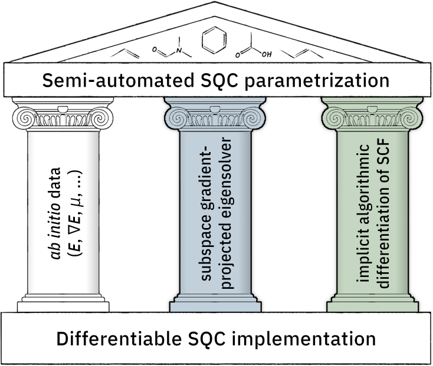
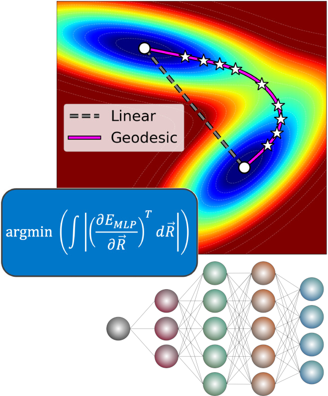
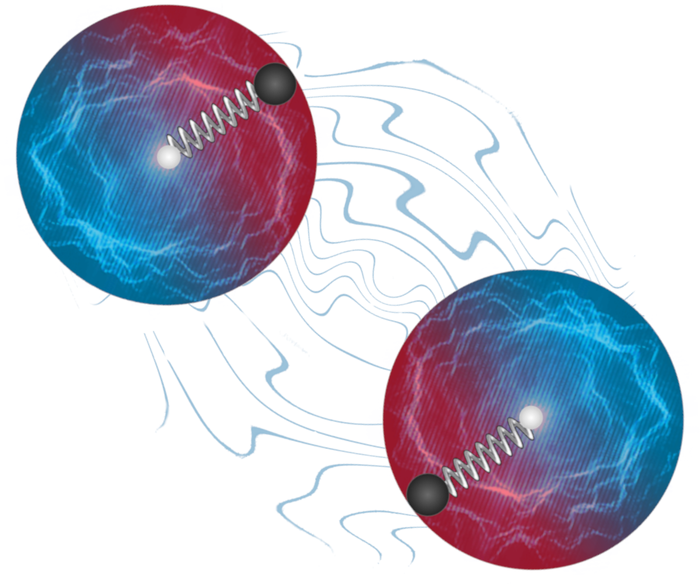
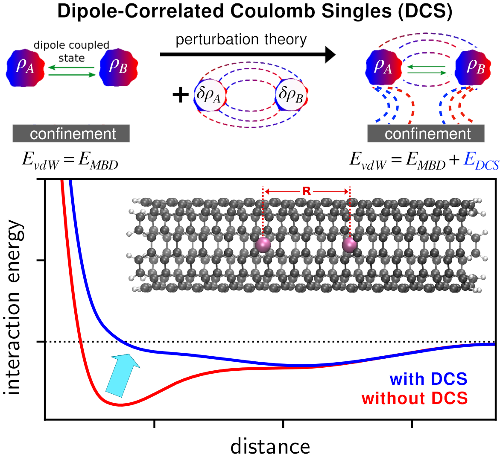
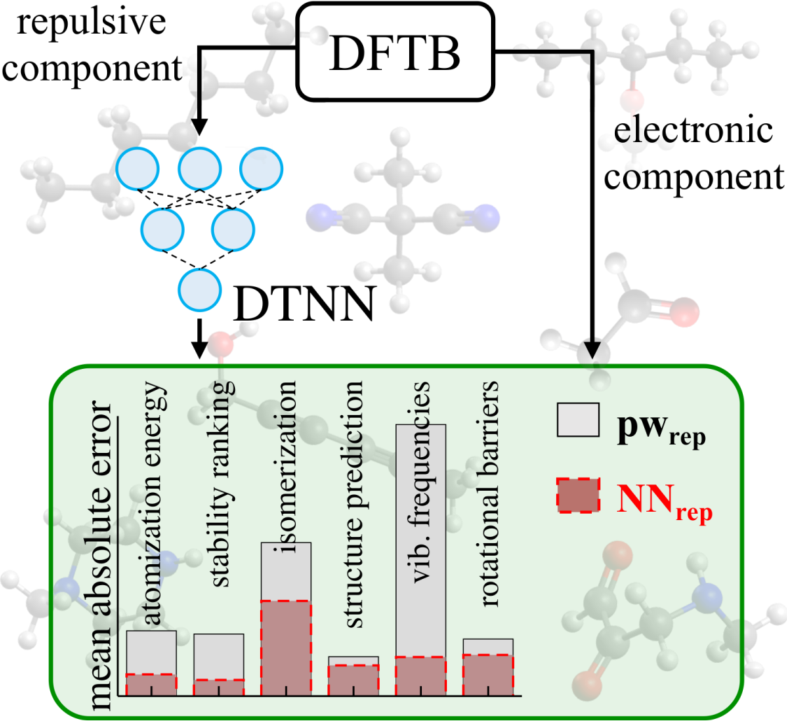
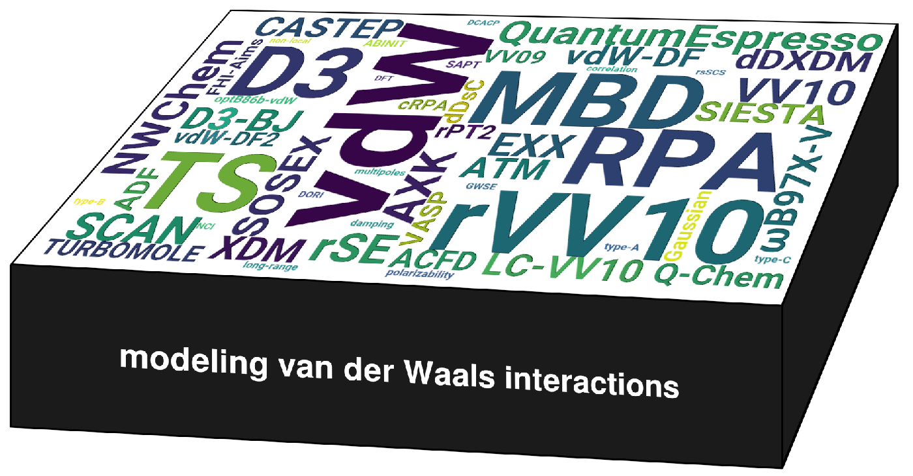
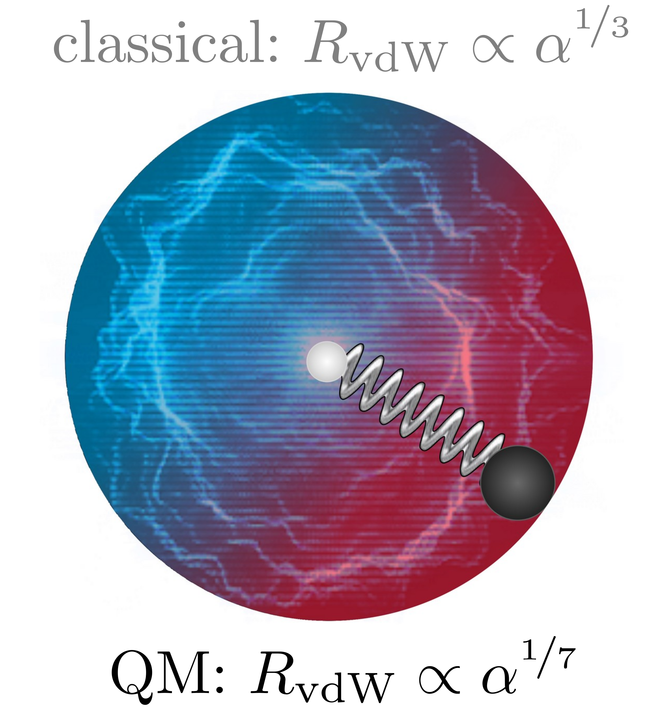
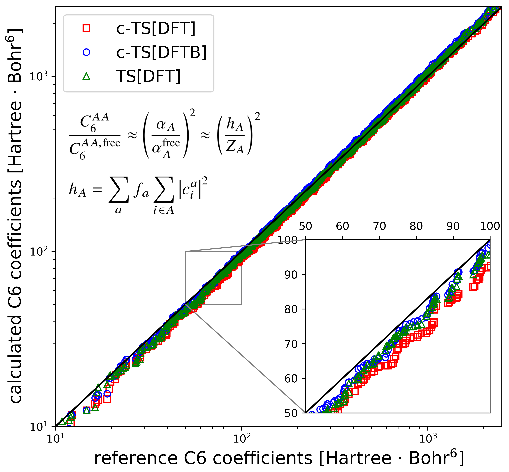
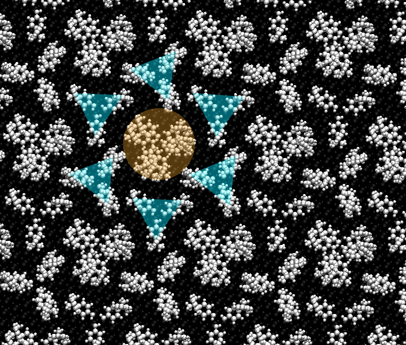

Advancing Density Functional Tight-Binding Method for Large Organic Molecules through Equivariant Neural Networks
L. Medrano Sandonas, M. Puleva, R. Parra Payano, M. Stöhr, G. Cuniberti and A. Tkatchenko: Physical Chemistry Chemical Physics accepted for publication (2026)
doi.org/10.1039/D6CP00038J
Semi-empirical quantum-mechanical (QM) methods have become valuable tools for studying complex (bio)molecular systems due to their balance between computational efficiency and accuracy. A key aspect of these methods is their parameterization, which not only governs the reliability of the results but also provides an opportunity to enhance their overall performance. In our previous work [J. Phys. Chem. Lett., 2021, 11, 16], we advanced the third-order semi-empirical density functional tight-binding (DFTB3) method for computing multiple properties of small molecules by developing the machine learning (ML) potential NNrep to bridge the gap between DFTB3 electronic components and those of the hybrid DFT-PBE0 functional. To overcome the limitations of NNrep, we introduce the EquiDTB framework, which leverages physics-inspired equivariant neural networks (NN) to parameterize scalable and transferable many-body ΔTB potentials, replacing the standard pairwise DFTB repulsive potential. This advancement extends the applicability of our ML-corrected DFTB approach to larger molecules and non-covalent systems (including only C, N, O, and H atoms), going beyond the chemical space represented in the training QM datasets. The enhanced performance of EquiDTB over the standard TB methods is demonstrated by the accurate computation of the atomic forces of S66x8 molecular dimers, as well as their interaction energies. Moreover, EquiDTB can be effectively employed to explore the potential energy surfaces of large and flexible drug-like molecules — for example, to determine the minimum energy path between isomers, analyze structural transitions during dynamical simulations, compute vibrational modes, and investigate energetic rankings. The performance for single molecules slightly decreases when the DFTB electronic energy is reduced to first-order but remains superior to standard TB methods. Our work thus demonstrates that an optimal integration of an equivariant NN with QM datasets can advance the DFTB method while maintaining high efficiency, paving the way for reliable (bio)molecular simulations.

Semiempirical Quantum Chemistry in the Age of ab initio Data and Differentiable Programming: I. Differentiable Molecular Orbital Theory
M. Stöhr and T. J. Martínez: Journal of Chemical Theory and Computation 22, 869–880 (2026)
doi.org/10.1021/acs.jctc.5c01482
Semiempirical quantum chemistry (SQC) methods offer fast quantum chemical insights by constructing and solving a parametric effective minimal basis Fock matrix. Establishing suitable parametrizations has long been a challenging and time-consuming task involving tedious grid searches or costly finite-difference gradients of carefully crafted loss functions based on select experimental data. The growing availability of differentiable programming environments that leverage algorithmic differentiation to obtain complicated derivatives together with access to a wealth of reliable reference data from ab initio calculations offers a new and more efficient approach. In this work, we extend a previous, basic implementation of SQC methods in PyTorch [Zhou, G. J. Chem. Theory Comput. 2020, 16, 4951–4962] by including global algorithmic considerations in the code design. This allows for improved general applicability and establishes a robust back-end for rapid SQC parametrizations. In particular, we address the general differentiability of the eigensolver and the iterative SCF procedure. The new implementation offers dramatic improvements in both computing cost and memory footprint, while simultaneously increasing numeric stability in gradient evaluation. We highlight the importance of these advances and their improvements over existing formulations and illustrate their role in the context of SQC parametrization.

Locating Ab Initio Transition States via Approximate Geodesics on Machine Learned Potential Energy Surfaces
D. Hait, J. D. Estrada Pabón, M. Stöhr and T. J. Martínez: Journal of Chemical Theory and Computation 21, 11632–11644 (2025)
doi.org/10.1021/acs.jctc.5c01221
Efficient and reliable identification and optimization of transition state structures is a longstanding challenge in computational chemistry. Popular chain-of-states methods require hundreds if not thousands of ab initio calculations to generate initial guesses for local quasi-Newton optimizers, with persistent risk of collapse to an alternative stationary point on the potential energy surface (PES). Here, we show that high-quality guess structures for transition state optimization can be obtained by constructing the geodesic path between reactant and product structures on the PES generated by machine learning potentials (MLPs). We present an algorithm for optimization of such geodesic paths, as well as the associated codebase. We demonstrate effectiveness of this approach using the recent eSEN-sm-cons MLP. On average, the highest-energy point along these MLP geodesics requires 30% fewer quasi-Newton optimization steps to converge to the transition state compared to guesses from the fully ab initio freezing string method. Our approach therefore completely eliminates the need for ab initio calculations for the generation of transition state guesses and considerably speeds up subsequent structural optimization. Geodesic construction on ML PES thus promises to be a useful approach for efficient computational elucidation of complex chemical reaction networks.

Accurate noncovalent interactions in atomistic systems via quantum Drude oscillators
A. Khabibrakhmanov, D. V. Fedorov, A. Ambrosetti, J. Crain, K. L. C. Hunt, E. R. Johnson, K. D. Jordan, S. Góger, M. Gori, M. R. Karimpour, R. J. Maurer, M. Sadhukhan, M. Stöhr and A. Tkatchenko: The Journal of Chemical Physics 163, 151001 (2025)
doi.org/10.1063/5.0281913
Accurately modeling polarization and van der Waals (vdW) interactions in atomistic systems typically requires high-level quantum-mechanical methods that are computationally expensive, hence limited in applicability. To address this challenge, efficient yet physically grounded models are needed—ones that not only enable accurate predictions but also provide insight into how noncovalent interactions scale in complex molecular and material systems. This review highlights the quantum Drude oscillator (QDO) model, a physically motivated and computationally efficient framework that captures the essential features of electronic response, including polarization and dispersion forces, across a wide range of chemical and material systems. We discuss how the QDO model quantitatively reproduces the polarization response of many-electron atoms and how key components of noncovalent interactions — exchange-repulsion, polarization, and dispersion — emerge naturally in QDO dimers. Furthermore, the model provides predictive scaling laws that elucidate trends in polarizability and dispersion across the periodic table and in molecular assemblies. By uniting interpretability, accuracy, and efficiency, the QDO model offers a versatile approach for modeling noncovalent interactions in systems ranging from isolated molecules to complex condensed phases and nanostructured materials.
Biomolecular dynamics with machine-learned quantum-mechanical force fields trained on diverse chemical fragments
O. T. Unke, M. Stöhr, S. Ganscha, T. Unterthiner, H. Maennel, S. Kashubin, D. Ahlin, M. Gastegger, L. Medrano Sandonas, J. T. Berryman, A. Tkatchenko and K.-R. Müller: Science Advances 10, eadn4397 (2024)
doi.org/10.1126/sciadv.adn4397
Molecular dynamics (MD) simulations allow insights into complex processes, but accurate MD simulations require costly quantum-mechanical calculations. For larger systems, efficient but less reliable empirical force fields are used. Machine-learned force fields (MLFFs) offer similar accuracy as ab initio methods at orders-of-magnitude speedup, but struggle to model long-range interactions in large molecules. This work proposes a general approach to constructing accurate MLFFs for large-scale molecular simulations (GEMS) by training on bottom-up
and top-down
molecular fragments, from which the relevant interactions can be learned. GEMS allows nanosecond-scale MD simulations of >25,000 atoms at essentially ab initio quality, correctly predicts dynamical oscillations between different helical motifs in polyalanine, and yields good agreement with terahertz vibrational spectroscopy for large-scale protein-water fluctuations in solvated crambin. Our analyses indicate that simulations at ab initio accuracy might be necessary to understand dynamic biomolecular processes.
libMBD: A general-purpose package for scalable quantum many-body dispersion calculations
J. Hermann, M. Stöhr, S. Góger, S. Chaudhuri, B. Aradi, R. J. Maurer and A. Tkatchenko: The Journal of Chemical Physics 159, 174802 (2023)
doi.org/10.1063/5.0170972
Many-body dispersion (MBD) is a powerful framework to treat van der Waals (vdW) dispersion interactions in density-functional theory and related atomistic modeling methods. Several independent implementations of MBD with varying degree of functionality exist across a number of electronic structure codes, which both limits the current users of those codes and complicates dissemination of new variants of MBD. Here, we develop and document libMBD, a library implementation of MBD that is functionally complete, efficient, easy to integrate with any electronic structure code, and already integrated in FHI-aims, DFTB+, VASP, Q-Chem, CASTEP, and Quantum ESPRESSO. libMBD is written in modern Fortran with bindings to C and Python, uses MPI/ScaLAPACK for parallelization, and implements MBD for both finite and periodic systems, with analytical gradients with respect to all input parameters. The computational cost has asymptotic cubic scaling with system size, and evaluation of gradients only changes the prefactor of the scaling law, with libMBD exhibiting strong scaling up to 256 processor cores. Other MBD properties beyond energy and gradients can be calculated with libMBD, such as the charge-density polarization, first-order Coulomb correction, the dielectric function, or the order-by-order expansion of the energy in the dipole interaction. Calculations on supramolecular complexes with MBD-corrected electronic structure methods and a meta-review of previous applications of MBD demonstrate the broad applicability of the libMBD package to treat vdW interactions.
Quantum-Mechanical Force Balance Between Multipolar Dispersion and Pauli Repulsion in Atomic van der Waals Dimers
O.Vaccarelli, D.V. Fedorov, M. Stöhr and A. Tkatchenko: Physical Review Research 3, 033181 (2021)
doi.org/10.1103/PhysRevResearch.3.033181
The structure and stability of atomic and molecular systems with van der Waals (vdW) bonding are often determined by the interplay between attractive dispersion interactions and repulsive interactions caused by electron confinement. Arising due to different mechanisms — electron correlation for dispersion and the Pauli exclusion principle for exchange-repulsion — these interactions do not appear to have a straightforward connection. In this paper, we use a coarse-grained approach for evaluating the exchange energy for two coupled quantum Drude oscillators and investigate the mutual compensation of the attractive and repulsive forces at the equilibrium distance within the multipole expansion of the Coulomb potential. This compensation yields a compact formula relating the vdW radius of an atom to its multipole polarizabilities, RvdW = Al α2/7(l +1)l, where l is the multipole rank and Al is a conversion factor. Such a relation is compelling because it connects an electronic property of an isolated atom (atomic polarizability) with an equilibrium distance in a dimer composed of two closed-shell atoms. We assess the accuracy of the revealed formula for noble-gas, alkaline-earth, and alkali atoms and show that the Al can be assumed to be universal constants. Besides a seamless definition of vdW radii, the proposed relation can also be used for the efficient determination of atomic multipole polarizabilities solely based on the corresponding dipole polarizability and the vdW radius. Finally, our work provides a basis for the construction of efficient and minimally-empirical interatomic potentials by combining multipolar interatomic exchange and dispersion forces on an equal footing.

Coulomb interactions between dipolar quantum fluctuations in van der Waals bound molecules and materials
M. Stöhr, M. Sadhukhan, Y.S. Al-Hamdani, J. Hermann and A. Tkatchenko: Nature Communications 12, 137 (2021)
doi.org/10.1038/s41467-020-20473-w
Mutual Coulomb interactions between electrons lead to a plethora of interesting physical and chemical effects, especially if those interactions involve many fluctuating electrons over large spatial scales. Here, we identify and study in detail the Coulomb interaction between dipolar quantum fluctuations in the context of van der Waals complexes and materials. Up to now, the interaction arising from the modification of the electron density due to quantum van der Waals interactions was considered to be vanishingly small. We demonstrate that in supramolecular systems and for molecules embedded in nanostructures, such contributions can amount to up to 6 kJ/mol and can even lead to qualitative changes in the long-range van der Waals interaction. Taking into account these broad implications, we advocate for the systematic assessment of so-called Dipole-Correlated Coulomb Singles in large molecular systems and discuss their relevance for explaining several recent puzzling experimental observations of collective behavior in nanostructured materials.

Accurate many-body repulsive potentials for density-functional tight binding from deep tensor neural networks
M. Stöhr, L. Medrano Sandonas and A. Tkatchenko: The Journal of Physical Chemistry Letters 11, 6835–6843 (2020)
doi.org/10.1021/acs.jpclett.0c01307
We combine density-functional tight-binding (DFTB) with deep tensor neural networks (DTNN) to maximize the strengths of both approaches in predicting structural, energetic, and vibrational molecular properties. The DTNN is used to learn a non-linear model for the localized many-body interatomic repulsive energy, which so far has been treated in an atom-pairwise manner in DFTB. Substantially improving upon standard DFTB and DTNN, the resulting DFTB-NNrep model yields accurate predictions of atomization and isomerization energies, equilibrium geometries, vibrational frequencies and dihedral rotation profiles for a large variety of organic molecules compared to the hybrid DFT-PBE0 functional. Our results highlight the high potential of combining semi-empirical electronic-structure methods with physically-motivated machine learning approaches for predicting localized many-body interactions. We conclude by discussing future advancements of the DFTB-NNrep approach that could enable chemically accurate electronic-structure calculations for systems with tens of thousands of atoms.
DFTB+, a software package for efficient approximate density functional theory based atomistic simulations
B. Hourahine, B. Aradi, V. Blum, F. Bonafé, A. Buccheri, C. Camacho, C. Cevallos, M. Y. Deshaye, T. Dumitrică, A. Dominguez, S. Ehlert, M. Elstner, T. van der Heide, J. Hermann, S. Irle, J. J. Kranz, C. Köhler, T. Kowalczyk, T. Kubař, I. S. Lee, V. Lutsker, R. J. Maurer, S. K. Min, I. Mitchell, C. Negre, T. A. Niehaus, A. M. N. Niklasson, A. J. Page, A. Pecchia, G. Penazzi, M. P. Persson, J. Řezáč, C. G. Sánchez, M. Sternberg, M. Stöhr, F. Stuckenberg, A. Tkatchenko, V. W.-z. Yu, T. Frauenheim: The Journal of Chemical Physics 152, 124101 (2020)
doi.org/10.1063/1.5143190
DFTB+ is a versatile community developed open source software package offering fast and efficient methods for carrying out atomistic quantum mechanical simulations. By implementing various methods approximating density functional theory (DFT), such as the density functional based tight binding (DFTB) and the extended tight binding method, it enables simulations of large systems and long timescales with reasonable accuracy while being considerably faster for typical simulations than the respective ab initio methods. Based on the DFTB framework, it additionally offers approximated versions of various DFT extensions including hybrid functionals, time dependent formalism for treating excited systems, electron transport using non-equilibrium Green’s functions, and many more. DFTB+ can be used as a user-friendly standalone application in addition to being embedded into other software packages as a library or acting as a calculation-server accessed by socket communication. We give an overview of the recently developed capabilities of the DFTB+ code, demonstrating with a few use case examples, discuss the strengths and weaknesses of the various features, and also discuss on-going developments and possible future perspectives.

Quantum mechanics of proteins in explicit water: The role of plasmon-like solute-solvent interactions
M. Stöhr and A. Tkatchenko: Science Advances 5, eaax0024 (2019)
doi.org/10.1126/sciadv.aax0024
Quantum-mechanical van der Waals dispersion interactions play an essential role in intraprotein and protein-water interactions – the two main factors affecting the structure and dynamics of proteins in water. Typically, these interactions are only treated phenomenologically, via pairwise potential terms in classical force fields. Here, we use an explicit quantum-mechanical approach of density-functional tight-binding combined with the many-body dispersion formalism and demonstrate the relevance of many-body van der Waals forces both to protein energetics and to protein-water interactions. In contrast to commonly used pairwise approaches, many-body effects substantially decrease the relative stability of native states in the absence of water. Upon solvation, the protein-water dispersion interaction counteracts this effect and stabilizes native conformations and transition states. These observations arise from the highly delocalized and collective character of the interactions, suggesting a remarkable persistence of electron correlation through aqueous environments and providing the basis for long-range interaction mechanisms in biomolecular systems.

Theory and practice of modeling van der Waals interactions in electronic-structure calculations
M. Stöhr, T. Van Voorhis and A. Tkatchenko: Chemical Society Reviews 48, 4118–4154 (2019)
doi.org/10.1039/C9CS00060G
The accurate description of long-range electron correlation, most prominently including van der Waals (vdW) dispersion interactions, represents a particularly challenging task in the modeling of molecules and materials. vdW forces arise from the interaction of quantum-mechanical fluctuations in the electronic charge density. Within (semi-)local density functional approximations or Hartree–Fock theory such interactions are neglected altogether. Non-covalent vdW interactions, however, are ubiquitous in nature and play a key role for the understanding and accurate description of the stability, dynamics, structure, and response properties in a plethora of systems. During the last decade, many promising methods have been developed for modeling vdW interactions in electronic-structure calculations. These methods include vdW-inclusive Density Functional Theory and correlated post-Hartree-Fock approaches. Here, we focus on the methods within the framework of Density Functional Theory, including non-local van der Waals density functionals, interatomic dispersion models within many-body and pairwise formulation, and random phase approximation-based approaches. This review aims to guide the reader through the theoretical foundations of these methods in a tutorial-style manner and, in particular, highlight practical aspects such as the applicability and the advantages and shortcomings of current vdW-inclusive approaches. In addition, we give an overview of complementary experimental approaches, and discuss tools for the qualitative understanding of non-covalent interactions as well as energy decomposition techniques. Besides representing a reference for the current state-of-the-art, this work is thus also designed as a concise and detailed introduction to vdW-inclusive electronic structure calculations for a general and broad audience.

Quantum-Mechanical Relation between Atomic Dipole Polarizability and the van der Waals Radius
D.V. Fedorov, M. Sadhukhan, M. Stöhr, and A. Tkatchenko: Physical Review Letters 121, 183401 (2018)
doi.org/10.1103/PhysRevLett.121.183401
The atomic dipole polarizability α and the van der Waals (vdW) radius RvdW are two key quantities to describe vdW interactions between atoms in molecules and materials. Until now, they have been determined independently and separately from each other. Here, we derive the quantum-mechanical relation RvdW = const. × α1/7, which is markedly different from the common assumption RvdW ∝ α1/3 based on a classical picture of hard-sphere atoms. As shown for 72 chemical elements between hydrogen and uranium, the obtained formula can be used as a unified definition of the vdW radius solely in terms of the atomic polarizability. For vdW-bonded heteronuclear dimers consisting of atoms A and B, the combination rule α = (αA + αB)/2 provides a remarkably accurate way to calculate their equilibrium interatomic distance. The revealed scaling law allows us to reduce the empiricism and improve the accuracy of interatomic vdW potentials, at the same time suggesting the existence of a nontrivial relation between length and volume in quantum systems.

Communication: Charge-Population Based Dispersion Interactions for Molecules and Materials
M. Stöhr, G.S. Michelitsch, J.C. Tully, K. Reuter, and R.J. Maurer: The Journal of Chemical Physics 144, 151101 (2016)
doi.org/10.1063/1.4947214
We introduce a system-independent method to derive effective atomic C6 coefficients and polarizabilities in molecules and materials purely from charge population analysis. This enables the use of dispersion-correction schemes in electronic structure calculations without recourse to electron-density partitioning schemes and expands their applicability to semi-empirical methods and tight-binding Hamiltonians. We show that the accuracy of our method is en par with established electron-density partitioning based approaches in describing intermolecular C6 coefficients as well as dispersion energies of weakly bound molecular dimers, organic crystals, and supramolecular complexes. We showcase the utility of our approach by incorporation of the recently developed many-body dispersion method [Tkatchenko et al., Phys. Rev. Lett. 108, 236402 (2012)] into the semi-empirical density functional tight-binding method and propose the latter as a viable technique to study hybrid organic-inorganic interfaces.

Dynamics of Spatially Confined Bisphenol A Trimers in a Unimolecular Network on Ag(111)
J. A. Lloyd, A. C. Papageorgiou, S. Fischer, S. C. Oh, Ö. Saǧlam, K. Diller, D. A. Duncan, F. Allegretti, F. Klappenberger,
M. Stöhr, R. J. Maurer, K. Reuter, J. Reichert and J. V. Barth: Nano Letters 16(3), 1884–1889 (2016)
doi.org/10.1021/acs.nanolett.5b05026
Bisphenol A (BPA) aggregates on Ag(111) shows a polymorphism between two supramolecular motifs leading to formation of distinct networks depending on thermal energy. With rising temperature a dimeric pairing scheme reversibly converts into a trimeric motif, which forms a hexagonal superstructure with complex dynamic characteristics. The trimeric arrangements notably organize spontaneously into a self-assembled one-component array with supramolecular BPA rotors embedded in a two-dimensional stator sublattice. By varying the temperature, the speed of the rotors can be controlled as monitored by direct visualization. A combination of scanning tunneling microscopy and dispersion-corrected density-functional tight-binding (DFTB-vdWsurf) based molecular modeling reveals the exact atomistic position of each molecule within the assembly as well as the driving force for the formation of the supramolecular rotors.